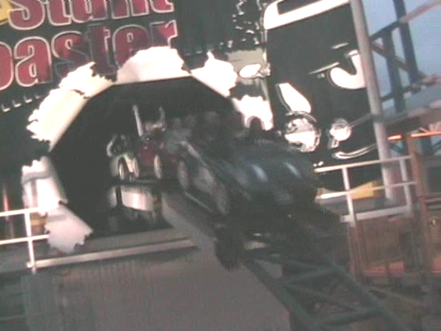

Backlot Stunt Coaster Review
Today at Canada's Wonderland, we are here to ride and review Backlot Stunt Coaster. Now at first, I thought NOTHING of this ride. I wasn't even planning on riding Backlot Stunt Coaster here. I was just planning on seeing what it was like at Kings Island. At first when I decided to ride it here, I thought "Cool. More time at Kings Island for me." So I got into the little mini cooper cars and pulled down the big bulky typical premier lap bar. I was pretty relaxed, but before I knew it, it just launched RIGHT out of the station. This caught me off guard as I expected it to roll out to a launch zone. The launch was actually more intense then I had expected it to be. While it's not going lightning fast, it was still pretty cool. After the launch, we head into one of the coolest parts of the ride. The Triple Helix. You just keep spiraling on up towards the sky, burning off the speed that we have gained during that launch. Some folks may be dizzy after this launch, but we felt fine on Incrediblecoasters due to our immunity to dizziness and sick roller coaster feelings. You then drop back down to the ground. We gain some speed back, but it doesn't feel as fast as the launch. Then we see a couple of cop cars out to get us, so we do a swervy S Curve to avoid them. Up next, we go through a heavily banked turn. It feels quite cool as its small, so it feels alot tighter and faster. We then rise up a big hill where we see an onramp to Hollywood. However, not wanting to go back home to California, we head through another swervy turnaround. We then end up in a shed heading down a non steep drop. We then curve out of it and rise up another hill before coming to a big section of straight track. We then completely stop at the end of this straight track, with the rest of the track leading into a strange tunnel. We see a helicopter, just sitting there. Looking at us. Spying on us, Stealing our idenities right before our very eyes. We then escape and blast into the dark. We can't see this onride, but as we go through the tunnek, the people in line see FIRE!!!! The stuff in the dark is very twisty and fun and fast. We then see the light, and then dip right under the exit bridge. We then go through some heavy trims that significantly slow us down, then after the turn, we roll into the brake run. While not the most exciting ride in the world, it's still a lot of fun. And if you've ever seen the Italian Job, you'll notice that the entire ride is just like the ending to Italian Job. So you can go "Cool!! I'm riding a movie!!!" But of course, as you all know, this ride used to be called the Italian Job because of this. But Cedar Fair went and gave it the crappy name of Backlot Stunt Coaster. While crappy, we'll at least tolerate the name Backlot Stunt Coaster. Anyways, this ride is fun. Go ride it.
7/10
Location: Canada's Wonderland
Opened: 2005
Built by: Premier
Last Ridden: August 7, 2008
I have ridden this exact same ride at the following parks.
Kings Island
Backlot Stunt Coaster Photos
